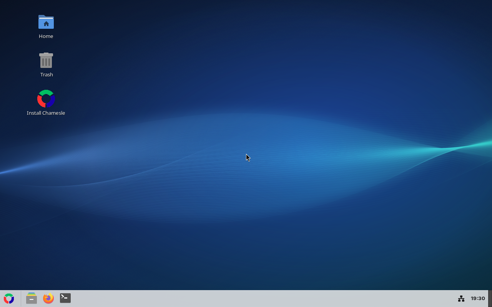
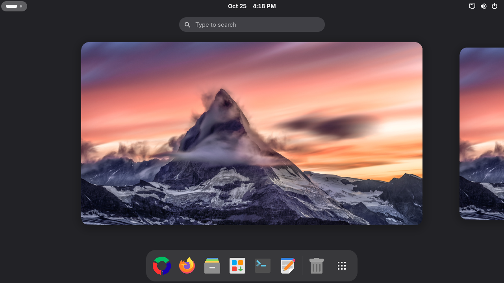
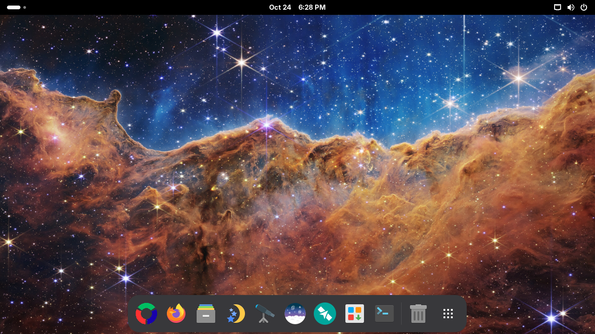

Xfce out now

The one to start with. Light on memory, and set up like Windows: one taskbar at the bottom, start menu bottom left (or press the Windows key), tray and clock bottom right. Fluent windows, Papirus icons and the Inter font, so it looks modern instead of 2008.
Good for: most people, older laptops, anyone coming from Windows. 2 GB RAM is fine.
MATE out now

The desktop Linux Mint's MATE edition is built on, rock solid and very light. Same Chamesle look as Xfce, with Mint's own start menu bottom left (the Windows key opens it too), window buttons along the bottom and the tray and clock on the right.
Good for: old machines, netbooks, people who like things to stay where they put them.
Cinnamon out now

Linux Mint's own desktop, the most polished of the Windows-style ones: smooth effects, a great start menu and pinned apps on the taskbar, just like Windows. Same Chamesle look and the same apps underneath.
Good for: Windows switchers with a computer from the last 8 years or so. 4 GB of RAM or more.
GNOME out now

Clean, modern, and different from Windows: one top bar, an overview with all your windows, and a dock at the bottom that gets out of the way when a window needs the room. Tray icons work, windows have minimise and maximise buttons, and the touchpad clicks with a tap. Works great on touchscreens. The first edition of 0.3.
Good for: people who want something new, laptops with touchpads.
Astro new

The first Flavor: the GNOME edition, set up for looking at the sky. Stellarium shows the sky from where you are, tonight or any night. KStars draws star charts and drives your telescope. Siril stacks and cleans up your astrophotos, and Gpredict tells you when the ISS flies over. The desktop is dark and turns warm at night, so your eyes stay used to the dark. The wallpaper is the Webb telescope's “Cosmic Cliffs” (NASA, ESA, CSA, STScI).
Good for: amateur astronomers, astrophotographers, anyone curious about what's up there. 4 GB of RAM or more.
KDE Plasma coming
Looks a lot like Windows by default, and you can change almost anything about it.
Good for: tinkerers, gamers, anyone with 4 GB of RAM or more.
Not sure?
Get Xfce. It's the most polished one and runs on pretty much anything. MATE is just as easy, so if you already know it from Mint, pick that.